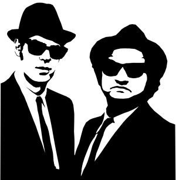
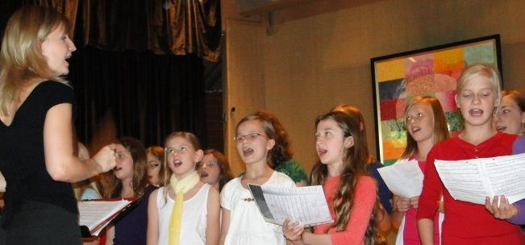

2015
Verwandlung

Herbstbunte Musikpremiere
Motto: Autumn comes :: Rock- und Pop-Klassiker :: Big Band mutiert zu Grabbe Winds
Von Walter Hunger (Text und Film)
In der randvoll besetzten Neuen Aula präsentierten Schülerinnen und Schüler aller Stufen, was sie in ihren Chören und den Grabbe Winds (ehemalige Big Band) erarbeitet hatten. Das Motto des Abends lautete: ,,Autumn comes, so feel the Grabbe breath", und mischte Rock- und Popklassiker wie ,,Rock around the clock" (Grabbe Winds), ,,Mamma mia" von ABBA (Young Grabbe Voices), California Dreaming (Sek II–Chor) und gefühlvolle Balladen wie ,,In the arm of an angel" (Madita Hörster/Marie Klemme). Die Singschule erfreute mit ,,Der musikalische Wasserhahn" und die Young Grabe Voices überraschten mit Brahms' ,,Guten Abend, gute Nacht".
In ihrer Begrüßung wiesen Stefanie Engelskirchen und Kirsten Fernández auf die besonderen Rahmenbedingungen aller Ensembles hin: Wenig Probenzeit, viele neue Mitglieder. Aber das beeinträchtigte nicht den Hör- und Sehgenuss für das Publikum. Engagement, Spielfreude und nicht zuletzt die Leistungen der jungen Künstler begeisterten das Publikum. Was als Experiment gestartet war, präsentierte sich als großer Erfolg für alle Beteiligten. Erstmals bewährten sich auch die neuen Chorpodeste auf der Bühne.
Einen Glückwunsch an alle und besonderen Dank an die Lehrkräfte Frau Engelskirchen, Frau Fernández, Herrn Wessel und Herrn Wischer!
Videoclip
2013
gemeinsam
Mit Combo und Chor
Premiere: Drei junge Ensembles zusammen auf der Bühne
von Hajo Gärtner (Text) und Walter Hunger (Fotos)
Es geht aufwärts: Ein grandioses Konzert lieferten Big Band, Combo und SI-Chor in der Neuen Aula ab. Die war recht gut gefüllt; ein mächtiges Publikum, das nach einem kurzen Warming Up mit den Blues Brothers voll mitging. Rhythmisches Klatschen beim Queen-Ohrwurm ,,We will rock you", metrisches Stampfen beim Rock'n'Roll-Klassiker ,,Rock around the clock".
Die Stimmung sei bombastisch gewesen, urteilt Ensemble-Leiterin Maren Morgenthaler; und alle, die ich um ein Urteil gebeten habe, stimmen darin überein. Zum Erfolg hat sicherlich auch die Idee beigetragen, drei junge Ensembles zusammen auf die Bühne zu bringen. Das Queen-Medley kam riesig an und die Großmütter konnten sich sogar für den Metallica-Dampfhammer ,,Enter Sandman'' erwärmen. Beinahe wäre das Publikum auch ins Heavy Metal-typische Kopfzucken (Head banging) verfallen: Dazu lud die Dirigentin jene Publikumsgeneration ein, die noch weiß, wie das geht. Das Gehirn durchschütteln wie anno dazumal, das wollten die älteren Semester dann lieber doch nicht riskieren.
Big Band und Combo, aber da war doch noch etwas? Richtig, der Chor der Sekundarstufe 1 bot einen Rap aus dem Musical ,,Coco Superstar''. Ein Blick in die Zukunft: Dieses hinreißende Musical für die Altersstufe 10 bis 15 Jahre soll im kommenden Schuljahr komplett aufgeführt werden.
2012
Neuer Start mit den Blues Brothers
Big Band sucht Mitspieler - Probe mittwochs von 15.30 bis 17 Uhr in der neuen Aula

Von Hajo GärtnerDie Big Band häutet sich: Geplant ist ein neuer Anfang mit neuen Musikern. Was für Schlangen eine geliebte Gewohnheit ist, hat das jüngste Ensemble des Grabbe-Musikhauses notgedrungen schon drei Mal hinter sich gebracht (Michael, Wischer, Morgenthaler). Und jedes Mal ist ein neuer Sound dabei herausgekommen. Nun steht der Reload Number 4 an. Zurzeit plant die Gründungscrew eine Blues-Brothers-Revue in einem fetzigen Soundformat. Als Projektergebnis ist eine Film-Präsentation vorstellbar, zu der die Band die Musik auf der Bühne live einspielt. Musiklehrerin Maren Morgenthaler (Musik/Sport) kann sich auch die Organisation eines Musicals, mindestens aber Gesang- und Tanzeinlagen als Teil des Projektes vorstellen. Sie zeigt sich offen für Ideen in jeder Richtung. Ich spiele E-Bass in der neuen Crew, weil ich die multimediale Neuausrichtung der Big Band, die nicht einmal mehr so heißen muss, interessant finde und weil es viel Spaß macht, zusammen mit Anderen ein Musiktheater auf die Beine zu stellen, möglicherweise ein Gesamtkunstwerk. Dabei könnten die drei Schulprofile Kunst, Musik und Sport zusammenfinden. Ambitioniert, ehrgeizig, aber nicht unmöglich. Wir brauchen dazu noch jede Menge Instrumente: Klavier, Saxophon, Posaune, Klarinette etc. Alles geht, außer Blockflöte und Triangel. Aber vielleicht kann man sogar darüber reden. Die neue Crew braucht keine Profis oder Ausnahmetalente, sondern lernfähige Leute mit echtem Interesse, die dann auch verlässlich zu den Proben kommen. Hand aufs Herz: Ich zupfe den E-Bass auch noch nicht perfekt. Was nicht ist, kann ja noch werden ;-)
Blick zurück
- der Anfang im Jahr 2006 =>
- die Ära Michael =>
- die Ära Wischer =>
- die Ära Morgenthaler =>
- Beispiel für die geplante Neuausrichtung =>
2011

Mit Combo und SI-Chor
Vielseitiges Programm durch Zusammenarbeit der Ensembles
Von Hajo Gärtner (Text & Fotos)
Ich habe Markus Wischer beide Daumen gedrückt. Das schien mir nötig. Denn bei den Proben vor ein paar Wochen sah die Lage gar nicht rosig aus: Die Combo wollte nicht so recht in den gemeinsamen Rhythmus finden, und Wischer - ich bewundere immer wieder seine Geduld! - musste den Melodie-Instrumenten unermüdlich die Linie vorsummen, die er gern hören wollte. War aber auch schwierig mit ,,Linkin Park" oder den ,,Heavytones": mitten im Takt einzusetzen, irgendwo im perlenden Achtel-Fluss, dann die Töne zu phrasieren statt sie glatt zu bügeln, und - als wenn das nicht allein schon schwer genug wäre - auch noch die Vorgaben der Rhythmus- und Harmoniegruppe zu beachten. Ja, fetziger Sound fordert dem Musiker schon eine Menge Konzentration ab und Überblick.
Aber es hat geklappt. Nicht nur Wischers Sorgenkind, die Combo, hat beim Publikum hervorragend abgeliefert, sondern auch die Big-Band mit gewohnter Wucht und - harmonisch perfekt - der Sek-I-Chor: mit ungewohnt französischen Klängen, aber mehrstimmig und wunderschön. Das Gesamt-Menü mit mehreren Gängen wirkte abwechslungsreich und riss das Publikum mit. Die Leute klatschten im Rhythmus von ,,Rock Around The Clock" am Ende so begeistert und waren nicht mehr zu bremsen, dass Wischer den Rock'n'Roll-Klassiker gleich noch einmal aufrief. Bei diesem Reißer traten alle Ensembles zusammen an und ließen die Neue Aula beben. Auch wenn die Dezibel-Zahlen in die Höhe schnellten, war der Sound doch immer ganz toll abgemischt und tat den Ohren in jeder Phase gut. Überhaupt: Wischer und Fernández scheinen eine gute Kombination für die Organisation vielschichtiger Konzerte zu sein. In der Kombination machen die drei Klangkörper noch mehr Spaß als einzeln.
Ich will mir jetzt hier nicht die Finger wundschreiben, denn Musik lebt davon, gehört - und gesehen! - zu werden. Deshalb arbeite ich lieber noch eine Bildergalerie aus und schiebe morgen einen üppigen Videoclip nach. Spätestens Donnerstagabend sollte die Berichterstattung komplett sein.

Videoclip
Das Video ist bei YouTube nicht gelistet. Es kann nur auf der Grabbe-Homepage gesehen werden und von den Freunden, die den Link kennen. hjg
Videoclip_neu
Das Video ist bei YouTube nicht gelistet. Es kann nur auf der Grabbe-Homepage gesehen werden und von den Freunden, die den Link kennen. hjg
ToT_2011
Das Video ist bei YouTube nicht gelistet. Es kann nur auf der Grabbe-Homepage gesehen werden und von den Freunden, die den Link kennen. hjg
Neuer frischer Sound
Highlights in Serie
2008: Neues Konzertmodell der Integration verschiedener Grabbbe-Ensembles
Von Walter Hunger (Text/Clips)
Die neue Aula des Grabbe-Gymnasiums erlebte eine Premiere. Die Big Band trat zum ersten Mal unter ihrem neuen Leiter, Wilhelm Michael, mit einem eigenen Programm auf und spielte Standards wie „Smoke on the water“. Der SI-Chor, unter der bewährten Leitung Wilhelm Michaels, erfreute mit Songs, darunter Miriam Makebas „Pata pata“. Neu für die Schulöffentlichkeit war auch das Ensemble „Quintessence“, fünf junge Männer aus der Oberstufe. Sie interpretierten Lieder der „Wise guys“ wie „Die wahre Liebe“.
Die Big Band präsentierte sich ausgesprochen temperamentvoll und folgte ihrem Leiter bis in die kleinste Geste. Mit insgesamt 12 Stücken umrahmte sie Chor und die a-capella- Sänger.
Der Chor der Jüngeren überzeugte mit sicherem Klang und hoher rhythmischer Präzision. Die acht Songs in eingängigen Arrangements, am Flügel begleitet vom Chorleiter, ernteten durchweg viel Applaus.
Die fünf Schüler, Benedikt Böeing, Jonathan Frank, Gabriel Theis, Benjamin Warlich, Michael Zieten, die als „Quintessence“ ausgewählte Songs der Kölner a-capella-Gruppe „Wise guys“ vortrugen und gleichzeitig ihre Songs witzig anmoderierten, stellten das dritte Highlight des Abends dar. Ihre sechs Songs wurden begeistert beklatscht.
Zur Freude des Publikums versprach Wilhelm Michael, dieses für das Grabbe neue Modell eines solchen Konzertes weiterhin zu pflegen.
Anhaltender Applaus belohnte alle Mitwirkenden.
Born to be wild
Film: Hunger | | Schnitt: Gärtner
Swing meets Jazz
Big Band meets Grabbe Winds
Jazziger Ohrenschmaus
mit Turnschuhen

von Valerie Kleinwegener
& Nicole Wiedemeyer
Foto: Walter Hunger
Die Instrumente blitzen auf im hellen Scheinwerferlicht. Viele Augenpaare blicken gebannt auf Notenblätter und warten auf den Einsatz. Drei verschiedene Bands bereiten sich auf den Moment vor, in dem sie ihr Können dem Publikum präsentieren wollen: die Big Band, die Newcomerband ,,Grabbe Winds" und die ,,alten Hasen", die Band der Dozenten.
Dem Alter den Vortritt: Die Band der Dozenten startet das Konzert mit ,,Coolness". Dann sind die Jüngeren dran: Nun folgen die ,,Grabbe Winds", die sich erst vor einem halben Jahr zusammengefunden haben und aus Unterstufenschülern bestehen.
Für die Chronik des musikalischen Lebens am Grabbe-Gymnasium: Am Mittwoch, 18. Januar 2006, machten sie zusammen mit den Großen aus der Big Band ihren ersten Schritt in das rege Musikleben des Grabbe-Gymnasiums.
Die Big Band spielt wie immer konzentriert-lässig ihre kräftigen Rhythmen, wodurch sie ihr Publikum in gute Stimmung versetzt, was durch ,,Gute-Laune-Lieder" wie z.B. ,,Chameleon" und andere Ohrwürmer noch weiter unterstützt wird. Die Grabbe Winds setzen dem ein Lied (,,Football's coming home") zum Mitsingen entgegen.
Trotz anfänglicher Lichtprobleme meistern die Musiker - auch ohne Sonnenbrille - einen gut gelungenen Auftritt in Schal, T-Shirt und Turnschuhen.
Nach etwa einer Stunde und einer saftigen Zugabe ist das Konzert vorbei, woraufhin alle die Aula mit guten, neu gewonnenen Eindrücken verlassen.

{kind=link}